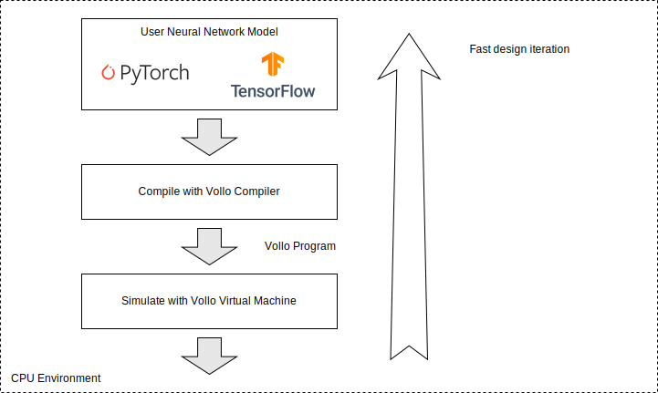
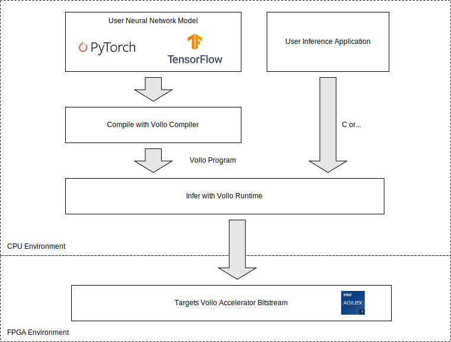

Introduction
The Vollo SDK is designed for low latency streaming inference of machine learning (ML) models on FPGA platforms.
You can estimate the latency of your model using the Vollo SDK without needing an FPGA or a Vollo license, see Getting Started for details.
This document outlines the following:
- Installation
- Key features of Vollo
- Steps to get started with Vollo
- The Vollo Compiler API
- The Vollo Runtime API
- Hardware requirements and setup
Installation
The latest SDK is available for download from https://github.com/MyrtleSoftware/vollo-sdk/releases.
Download the vollo-sdk-<version>.run self-extractable archive and execute it
to extract the Vollo SDK contents to the current directory.
chmod +x vollo-sdk-<version>.run
./vollo-sdk-<version>.run
Key Features
Vollo accelerates machine learning inference for low latency streaming models typically found in financial trading or fraud detection systems such as:
- Market predictions
- Risk analysis
- Anomaly detection
- Portfolio optimisation
Vollo is able to process of range of models, including models which maintain state while streaming such as convolutional models.
Key characteristics of Vollo are:
- Low latency inference of machine learning models, typically between 5-10μs.
- High accuracy inference through use of Brain Floating Point 16 (bfloat16) numerical format.
- High density processing in a 1U server form factor suitable for co-located server deployment.
- Compiles a range of PyTorch models for use on the accelerator.
Getting Started
You can get started with evaluating your ML model's performance on Vollo using the Vollo compiler and Vollo virtual machine (VM), which don't require an FPGA accelerator.
When you are ready, you can run inferences with your model on a Vollo FPGA accelerator using an evaluation license.
Performance estimation and model design with the Vollo compiler
You can use the Vollo compiler and VM to compile and estimate the performance of your model in an ML user's environment without any accelerator.

The Vollo compiler and Vollo VM execution time is typically on the order of seconds, enabling fast model iteration for tuning models to meet a latency target.
To estimate performance of your model with the Vollo SDK:
-
Download and extract the Vollo SDK.
-
Install the Vollo compiler Python libraries.
-
Compile your model using the Vollo compiler and run the compiled model in the Vollo VM to generate a compute latency estimate that will be achieved with Vollo.
See Vollo compiler Example 1 for a fully worked example of this including performance estimation.
-
Add in IO latency for your model characteristics in order to estimate end to end latency.
-
Iterate on your model architecture to meet your combined latency and accuracy requirements.
Validating inference performance using the Vollo FPGA accelerator
When you are ready to run inferences with your models on a Vollo accelerator, you will need a compatible FPGA based PCIe accelerator card and a Vollo license.
Evaluation licenses can be provided free of charge by contacting vollo@myrtle.ai.

To validate inference performance on Vollo:
-
Compile your model and save it as a
.volloprogram file using the Vollo compiler.See Vollo compiler Example 1 for a fully worked example.
-
Run and benchmark your model on the accelerator using the Vollo runtime C example.
Make sure to pass the example application the path to your saved
.volloprogram when you invoke it on the command line.
Note that the Vollo SDK includes prebuilt FPGA bitstreams for selected PCIe accelerator cards so no FPGA compilation or configuration is required after initial accelerator setup. As a result loading user models to run on Vollo takes under a second, enabling fast onboard iteration and evaluation of different models.
Vollo Compiler
The Vollo compiler is made up of 2 Python libraries:
- The
vollo-torchPyTorch frontend to the compiler. - The
vollo-compilerbackend that can transform and compile a model to a Vollo program (.vollofile).
The Vollo Runtime section describes how to run a Vollo program on a Vollo accelerator. The Vollo compiler API also includes functionality to simulate and estimate performance of Vollo programs.
API Reference
This chapter walks through examples of how to use the Vollo compiler that should cover the most commonly used parts of the API.
A more complete API reference can be found here.
Installation
Set up Vollo environment variables by sourcing
setup.sh in bash.
Install the wheel files for the Vollo compiler libraries. It's recommended that you install these into a virtual environment.
Note: the packaged wheels only support python 3.7 or greater
python3 -m venv vollo-venv
source vollo-venv/bin/activate
pip install --upgrade pip
pip install "$VOLLO_SDK"/python/*.whl
Supported Models
The Vollo compiler supports PyTorch models that use the following operations:
| Operation | Support Notes |
|---|---|
| Pointwise arithmetic ops | +, -, *, / |
| Inequality | >, <, >=, <= |
max and min | |
| Clamp ops | clamp, relu |
| Matrix multiplication | Linear; matmul / @ where one side is a constant |
| Convolution | Via vollo_torch.nn.PaddedConv1d |
| LSTM | Via vollo_torch.nn.LSTM |
| Indexing / slicing | Partial square bracket [] support; index_select |
sum | keepdim = True required when summing over data dim |
where | If the where condition is an inequality comparison |
| Concatenation | cat, concat |
LayerNorm | |
RMSNorm | via vollo_torch.nn.RMSNorm for torch versions < 2.4 |
| Batch Normalization | BatchNorm1d, BatchNorm2d, BatchNorm3d |
transpose | See section below |
squeeze, unsqueeze | |
sqrt | torch.sqrt, torch.rsqrt |
Note that for operations like Dropout and BatchNorm1d (which change behaviour at inference time) to be handled correctly, the model should be in eval mode.
Tensor Memory Format
Vollo supports operations on tensors in data- or channels- last memory format, i.e. the innermost dimension of the tensors should be the data or channels dimension rather than the batch or sequence dimension if there is one. This is because the Vollo accelerator's compute units operate on contiguous vectors (1D tensors) and has limited support for rearranging tensor data, particularly transposing them.
There are some notable exceptions that do not require channels-last tensors:
- Layers that operate on sequences:
Conv1d,LSTM. Vollo supports the same (batch, channels, sequence) memory format that PyTorch uses for these layers, but requires applying the streaming transform to models that contain them. - General matrix multiplication (as opposed to the more restrictive
Linear):matmul,@.
TorchScript
The Vollo compiler supports standard PyTorch modules (torch.nn.Module); it
does not support TorchScript modules (torch.jit.ScriptModule).
Example 1: MLP
Basic models like multilayer perceptrons (MLP) can be defined without any changes from a standard PyTorch definition.
import torch
import torch.nn as nn
import torch.nn.functional as F
class MLP(nn.Module):
def __init__(self, input_size, output_size, hidden_size):
super().__init__()
self.fc1 = nn.Linear(input_size, hidden_size)
self.fc2 = nn.Linear(hidden_size, hidden_size)
self.out = nn.Linear(hidden_size, output_size)
def forward(self, x):
x = F.relu(self.fc1(x))
residual = x
x = F.relu(self.fc2(x)) + residual
return self.out(x)
# Instantiate the model
input_size = 784
output_size = 10
hidden_size = 128
model = MLP(input_size, output_size, hidden_size)
The first stage of compiling a model is to lower it to NNIR. NNIR is the Vollo compiler's intermediate representation for representing neural network graphs. NNIR sits at a similar level of abstraction to ONNX, with most NNIR operators having direct ONNX or PyTorch analogues.
import vollo_torch
# An input to the model needs to be provided so that its execution can be
# traced
input = torch.randn(input_size)
# Trace the model's execution to annotate it with activation shapes
(model, expected_output) = vollo_torch.fx.prepare_shape(model, input)
nnir = vollo_torch.fx.nnir.to_nnir(model)
NNIR can be compiled to a Vollo program given a Vollo accelerator configuration.
import vollo_compiler
config = vollo_compiler.Config.ia_420f_c6b32()
program = nnir.to_program(config)
Vollo programs have all their memory allocated statically. You can print the static resource usage of a program like this:
print(program.metrics())
Save the program to a file so that it can be used for inference by the Vollo runtime.
program.save('mlp.vollo')
Simulation
The Vollo compiler can be used to simulate programs in the Vollo virtual machine (VM). This is an instruction level simulation of the Vollo accelerator which can be used to:
- Estimate performance of a model. The VM is not cycle accurate but provides an indicative cycle count of a model.
- Verify the correctness of the compilation stages, including the effect of quantisation.
Construct a VM instance with your program loaded. Run the VM by passing it a numpy array of the input. It should produce the same result as the source PyTorch model, within some range of floating point error.
vm = program.to_vm()
vm_output = vm.run(input.detach().numpy())
torch.testing.assert_close(expected_output, torch.from_numpy(vm_output), atol = 1e-2, rtol = 1e-2)
print("cycle count:", vm.cycle_count())
# Translate the estimated cycle count to a duration for the compute (not
# including IO) in microseconds, using the bitstream clock speed (320 MHz)
print(f"latency (compute): {vm.compute_duration_us():.1f}us")
The VM records the number of cycles the program took to execute.
Note there will be some discrepancy between the VM's cycle count and the true
cycle count, so the VM's cycle count should be treated as an estimate.
Also note that the VM does not model the latency of the communication between
the host and the Vollo accelerator. This communication latency can be estimated
using our IO Round Trip benchmarks.
Example 2: CNN
Vollo supports streaming 1D convolutional neural networks (CNNs), which might require you to make some changes to your model if you are currently using a non-streaming 1D CNN.
A streaming convolution applies the convolutional kernel to the most recent window of the input sequence as the data points in the input sequence arrive. This differs from a non-streaming convolution, which expects to receive a complete input sequence and applies its convolutional kernel to each window of that input.
Streaming convolutions will have much lower latency than non-streaming
convolutions, but they have to maintain some state, namely the most recent
window of input, making them unnatural to define in ML frameworks like PyTorch.
To enable the use of of streaming convolutions, the Vollo compiler includes a
streaming_transform which transforms a non-streaming CNN into a streaming CNN,
as long as the non-streaming CNN meets certain constraints.
Using the streaming_transform
The model below is a non-streaming CNN taking an input sequence of length 5 and producing an output of length 1. (It can actually take any input sequence of length 5+n and produce an output of length 1+n, but we will only consider the minimal sequence length, since that is the length of the input context used by each of the output elements.)
import torch
import torch.nn as nn
import torch.nn.functional as F
class CNN(nn.Module):
def __init__(self, in_channels, out_channels, hidden_channels, kernel_size=3):
super().__init__()
# Reduces sequence length by (kernel_size - 1) = 2
self.conv1 = nn.Conv1d(in_channels, hidden_channels, kernel_size)
# Reduces sequence length by (kernel_size - 1) = 2
self.conv2 = nn.Conv1d(hidden_channels, out_channels, kernel_size)
def forward(self, x):
x = F.relu(self.conv1(x))
x = F.relu(self.conv2(x))
return x
# Instantiate the model
in_channels = 32
out_channels = 1
hidden_channels = 128
model = CNN(in_channels, out_channels, hidden_channels)
In order to apply the streaming_transform, the torch.nn.Conv1d layers need
to be replaced with vollo_torch.nn.PaddedConv1d layers.
import torch
import torch.nn as nn
import torch.nn.functional as F
import vollo_torch.nn
class CNN(nn.Module):
def __init__(self, in_channels, out_channels, hidden_channels, kernel_size=3):
super().__init__()
self.conv1 = vollo_torch.nn.PaddedConv1d(in_channels, hidden_channels, kernel_size)
self.conv2 = vollo_torch.nn.PaddedConv1d(hidden_channels, out_channels, kernel_size)
def forward(self, x):
x = F.relu(self.conv1(x))
x = F.relu(self.conv2(x))
return x
# Instantiate the model
in_channels = 32
out_channels = 1
hidden_channels = 128
model = CNN(in_channels, out_channels, hidden_channels)
These PaddedConv1d layers are identical to torch.nn.Conv1d, but with left
padding pre-applied to the input so as not to reduce the sequence length.
This PaddedConv1d model is still a non-streaming model, which now takes an
input sequence of length 5 and produces an output of length 5.
Its relationship to the original Conv1d model is that, given the same model
parameters (weights, biases, etc.) and input sequence, the last element of the
output sequence of the PaddedConv1d model will be equal to the last/only
element of the output sequence of the Conv1d model.
The PaddedConv1d model can be lowered to NNIR and have the
streaming_transform applied.
batch_size = 1
sequence_length = 5
input = torch.randn(batch_size, in_channels, sequence_length)
(model, expected_output) = vollo_torch.fx.prepare_shape(model, input)
nnir = vollo_torch.fx.nnir.to_nnir(model)
# Provide the streaming transform with index of the sequence axis
(nnir, output_axis) = nnir.streaming_transform(2)
The resulting NNIR graph represents a streaming CNN, i.e. containing state, that takes a single data point of a sequence as input and produces a single data point as output, updating its input window state in the process. Input sequences for the streaming CNN need to be fed in sequentially, e.g. in a loop. For example, using the VM:
import vollo_compiler
program = nnir.to_program(vollo_compiler.Config.ia_420f_c6b32())
vm = program.to_vm()
vm_outputs = []
for i in range(5):
# Runs inference on one element of the input sequence, updating the
# streaming CNN's state
vm_outputs.append(vm.run(input[:, :, i].detach().numpy()))
torch.testing.assert_close(
expected_output,
torch.stack(
[torch.from_numpy(output) for output in vm_outputs],
axis=output_axis,
),
atol = 1e-2,
rtol = 1e-2
)
The streaming CNN satisfies the property that, given an input sequence, the i-th element of the output sequence of the non-streaming CNN will be equal to the output of the i-th iteration of feeding the input to the streaming CNN.
The streaming CNN can be saved and run on the accelerator like any other program:
program.save('cnn.vollo')
Example 3: Multiple Models in a Vollo Program
Vollo supports putting multiple models on a single accelerator.
Multiple NNIRs can be compiled into a single program:
import torch
import torch.nn as nn
import torch.nn.functional as F
import vollo_torch
class MLP(nn.Module):
def __init__(self, input_size, output_size, hidden_size):
super().__init__()
self.fc1 = nn.Linear(input_size, hidden_size)
self.fc2 = nn.Linear(hidden_size, hidden_size)
self.out = nn.Linear(hidden_size, output_size)
def forward(self, x):
x = F.relu(self.fc1(x))
residual = x
x = F.relu(self.fc2(x)) + residual
return self.out(x)
# Instantiate an MLP
input_size = 784
output_size = 10
hidden_size = 128
mlp_model = MLP(input_size, output_size, hidden_size)
mlp_input = torch.randn(input_size)
(mlp_model, mlp_expected_output) = vollo_torch.fx.prepare_shape(mlp_model, mlp_input)
mlp_nnir = vollo_torch.fx.nnir.to_nnir(mlp_model)
class CNN(nn.Module):
def __init__(self, in_channels, out_channels, hidden_channels, kernel_size=3):
super().__init__()
self.conv1 = vollo_torch.nn.PaddedConv1d(in_channels, hidden_channels, kernel_size)
self.conv2 = vollo_torch.nn.PaddedConv1d(hidden_channels, out_channels, kernel_size)
def forward(self, x):
x = F.relu(self.conv1(x))
x = F.relu(self.conv2(x))
return x
# Instantiate a CNN
in_channels = 32
out_channels = 1
hidden_channels = 128
cnn_model = CNN(in_channels, out_channels, hidden_channels)
batch_size = 1
sequence_length = 5
cnn_input = torch.randn(batch_size, in_channels, sequence_length)
(cnn_model, cnn_expected_output) = vollo_torch.fx.prepare_shape(cnn_model, cnn_input)
cnn_nnir = vollo_torch.fx.nnir.to_nnir(cnn_model)
(cnn_nnir, output_axis) = cnn_nnir.streaming_transform(2)
# Compile the multi-model program
import vollo_compiler
program_builder = vollo_compiler.ProgramBuilder(vollo_compiler.Config.ia_420f_c6b32())
program_builder.add_nnir(mlp_nnir)
program_builder.add_nnir(cnn_nnir)
multi_model_program = program_builder.to_program()
The vollo_compiler.ProgramBuilder allows you to create a multi-model program. Building a multi-model program may give an allocation error if
the models can't fit on the given Config. Generally each individual model will only have a small latency overhead compared to running it as an individual program. This overhead comes from selecting which model to run.
A model_index can be provided when running inferences on the accelerator or on the VM. The models appear in the order in which they were added to the ProgramBuilder. For example on the VM:
vm = multi_model_program.to_vm()
mlp_vm_output = vm.run(mlp_input.detach().numpy(), model_index = 0)
torch.testing.assert_close(mlp_expected_output, torch.from_numpy(mlp_vm_output), atol = 1e-2, rtol = 1e-2)
cnn_vm_outputs = []
for i in range(5):
cnn_vm_outputs.append(vm.run(cnn_input[:, :, i].detach().numpy(), model_index = 1))
torch.testing.assert_close(
cnn_expected_output,
torch.stack(
[torch.from_numpy(output) for output in cnn_vm_outputs],
axis=output_axis,
),
atol = 1e-2,
rtol = 1e-2
)
ONNX Support
Vollo also provides a tool for compiling ML models defined in ONNX.
vollo-onnx is a command line tool which allows the user to specify an input ONNX file and produces a .vollo program as output. The user specifies a path to the input .onnx file:
Arguments:
<INPUT>
Path to the input .onnx file
The user can specify:
-
The output path:
-o, --output <OUTPUT> Output path for the compiled program file [default: program.vollo] -
A name for the model:
--model-name <MODEL_NAME> Name of the model -
The hardware configuration to use based on a JSON file (this JSON file can be generated using the
Configmethodsavein thevollo_compilerpython module):--hw-config <HW_CONFIG_JSON> Path to the hardware config JSON file -
A name for the hardware configuration to use (from a set of preset configs).
--hw-config-preset <PRESET_NAME> Hardware configuration to use, chosen from a set of presets [possible values: ia420f-c6b32, ia840f-c3b64, ia840f-c2b64d] -
Which transformations to perform on the model. Currently the only available transformation is the streaming transform Example 2: CNN:
--streaming-transform <STREAMING_AXIS> Axis on which to perform the streaming transform in the NNIR graph If unspecified, no streaming transform is performed -
The input shape of the model. This is required if the ONNX model has dynamic input shapes. Vollo requires that the shape of the input be known at compile-time:
--override-input-shape <SHAPE> If the model has dynamic input shapes, the user must pass a fixed input shape Example: 10,100,250 -
Whether to elide all compute logic and generate a program with only IO logic. This is useful for determining IO latencies.
--io-only Generate a program with IO only - useful for testing IO latencies -
Whether to disable certain optimizations in the compiler which increase compilation time.
--disable-optimizations Disables some compiler optimizations. This can improve compilation time
Simplifying ONNX Models
vollo-onnx has a limited list of supported ONNX nodes. Often ONNX models can be over-complicated, and contain unnecessary shaping operations. It is recommended that onnx-simplifier be used before calling vollo-onnx on an ONNX model to remove these unnecessary shaping operations which aren't supported by vollo-onnx:
onnx-sim <model.onnx> <model-sim.onnx> --overwrite-input-shape <model-input-shape>
It is also recommended to use the --overwrite-input-shape with onnx-simplifier, as this can enable further simplifications and better constant folding.
Using ONNX from Python
ONNX models can also be imported and translated to NNIR models directly in python using the static NNIR method from_onnx. This also requires that the input shape be specified if the ONNX model has dynamic input shapes, otherwise it can be None.
onnx_nnir = vollo_compiler.NNIR.from_onnx(onnx_path, input_shape)
Supported Nodes
Tensors are expected to be in float32 format, unless they are used as indices / axes (in which case they should be int64s).
vollo-onnx supports models with the following nodes:
| Operator | Support Notes |
|---|---|
| Pointwise arithmetic ops | Add, Sub, Mul, Div |
| Inequality | >, <, >=, <= (when followed by a Where) |
Max and Min | |
Neg | |
| Clamp ops | Clip, Relu |
| Matrix multiplication | MatMul / Gemm where one input is a constant |
Conv | 1d with left-padding such that input and output seq dimensions match |
LSTM | Forward LSTM without explicit hidden or cell state initialisation |
Gather | With a 0d/1d tensor of indices |
Slice | step size 1 with constant starts, ends and axes. |
ReduceSum | With constant axes, keepdims = 1 required on data dimension |
Where | If the Where condition is an inequality comparison |
Concat | On outer dimension or at start or end of model |
Transpose | See tensor memory format |
LayerNormalization | With axis = -1. Supported in onnx opset versions >= 17 |
BatchNormalization | Where input scale, bias, mean and var are constants |
Squeeze, Unsqueeze | |
Reciprocal | |
Identity | |
Sqrt |
Benchmarks
This section provides benchmarks for the Vollo accelerator for a variety of models.
Performance figures are given for two configurations of the Vollo accelerator. A three big core configuration which is provided for the IA-840F accelerator card and a six small core configuration which is provided for the IA-420F accelerator card. If you require a different configuration, please contact us at vollo@myrtle.ai.
All these performance numbers can be measured using the vollo-sdk with the correct accelerator card
by running the provided benchmark script.
We also provide performance figures for a PCIe roundtrip for various input and output sizes.
Multilayer perceptron (MLP)
The model below is a simple multilayer perceptron (MLP) with 3 layers.
class MLP(nn.Module):
def __init__(self, input_size, hidden_size, output_size):
super().__init__()
self.fc1 = nn.Linear(input_size, hidden_size)
self.fc2 = nn.Linear(hidden_size, hidden_size)
self.fc3 = nn.Linear(hidden_size, output_size)
def forward(self, x):
x = nn.functional.relu(self.fc1(x))
x = nn.functional.relu(self.fc2(x))
return self.fc3(x)
mlp = MLP(256.0, 384.0, 128.0)
We demonstrate the model at a variety of batch sizes. The model has 295K parameters.
IA-840F: 3 big cores
| Model | Batch size | Mean latency (μs) | 99th Percentile latency (μs) |
|---|---|---|---|
| mlp_b1 | 1 | 2.3 | 2.4 |
| mlp_b4 | 4 | 2.5 | 2.6 |
| mlp_b8 | 8 | 2.7 | 2.8 |
IA-420F: 6 small cores
| Model | Batch size | Mean latency (μs) | 99th Percentile latency (μs) |
|---|---|---|---|
| mlp_b1 | 1 | 2.9 | 3.0 |
| mlp_b4 | 4 | 3.0 | 3.1 |
| mlp_b8 | 8 | 3.4 | 3.5 |
1D Convolutional neural networks (CNN)
We benchmark a simple 1-D convolutional model with a residual connection after every layer.
class ConvBlock(nn.Module):
def __init__(self, channels, kernel_size):
super().__init__()
self.conv = vollo_torch.nn.PaddedConv1d(channels, channels, kernel_size)
def forward(self, inp):
x = self.conv(inp)
return nn.functional.relu(x) + inp
class CNN(nn.Module):
def __init__(self, num_layers, kernel_size, channels):
super().__init__()
assert num_layers >= 1
self.cnn = nn.Sequential(
*[ConvBlock(channels, kernel_size) for i in range(num_layers)],
)
def forward(self, x):
x = self.cnn(x) # N x channels x T
return x
IA-840F: 3 big cores
| Model | Layers | Channels | Parameters | Mean latency (μs) | 99th Percentile latency (μs) |
|---|---|---|---|---|---|
| cnn_tiny | 3 | 128 | 393K | 2.2 | 2.2 |
| cnn_small | 3 | 256 | 1.6M | 2.4 | 2.5 |
| cnn_med | 6 | 256 | 3.1M | 3.0 | 3.2 |
The kernel size for all models is 8.
IA-420F: 6 small cores
| Model | Layers | Channels | Parameters | Mean latency (μs) | 99th Percentile latency (μs) |
|---|---|---|---|---|---|
| cnn_tiny | 3 | 128 | 393K | 2.2 | 2.3 |
| cnn_small | 3 | 256 | 1.6M | 2.8 | 3.0 |
| cnn_med | 6 | 256 | 3.1M | 3.9 | 3.9 |
The kernel size for all models is 8.
Long Short Term Memory (LSTM) networks
We benchmark an LSTM model consisting of a stack of LSTMs followed by a linear layer.
class LSTM(nn.Module):
def __init__(self, num_layers, input_size, hidden_size, output_size):
super().__init__()
assert num_layers >= 1
self.lstm = vollo_torch.nn.LSTM(
input_size, hidden_size, num_layers=num_layers
)
self.fc = nn.Linear(hidden_size, output_size)
def forward(self, x):
x = self.lstm(x)
x = self.fc(x)
return x
We have also had LSTM models benchmarked and audited as part of a STAC-ML submission where we hold the lowest latency across all models. Please refer to our STAC-ML submissions for more details:
IA-840F: 3 big cores
| Model | Layers | Hidden size | Parameters | Mean latency (μs) | 99th Percentile latency (μs) |
|---|---|---|---|---|---|
| lstm_tiny | 2 | 128 | 266K | 1.9 | 2.0 |
| lstm_small | 3 | 256 | 1.6M | 3.0 | 3.1 |
| lstm_med | 3 | 480 | 5.5M | 4.2 | 4.4 |
| lstm_med_deep | 6 | 320 | 4.9M | 4.3 | 4.5 |
The input size is the same as the hidden size for all models and the output size is set to 32. The layers refers to the number of LSTM layers in the stack.
IA-420F: 6 small cores
| Model | Layers | Hidden size | Parameters | Mean latency (μs) | 99th Percentile latency (μs) |
|---|---|---|---|---|---|
| lstm_tiny | 2 | 128 | 266K | 2.2 | 2.3 |
| lstm_small | 3 | 256 | 1.6M | 4.2 | 4.4 |
The input size is the same as the hidden size and the output size is set to 32.
The two medium models are not supported on the IA-420F accelerator card as they are too large to fit in the accelerator memory.
IO Round Trip
The following IO round trip times are sampled by using a program with no compute on the Vollo accelerator from the Vollo runtime.
More specifically this Vollo accelerator program waits for the last input byte to arrive before it sends the first output byte back. This method takes into account some of the overheads (such as copying to the DMA buffer in the Vollo runtime) associated with IO and this test is set up to see how it scales with difference sizes of inputs and output values.
The following tables shows the round trip times in μs on the IA420F
board (similar times were observed on IA840F), each value is a bfloat16 (2 bytes),
using fewer than 32 values gives the same times as 32 values.
To reproduce these values on your own hardware run the provided benchmark
script with environment variable RUN_IO_TEST=1.
User buffers
This includes copying data to/from DMA buffers.
mean:
| out\in | 32 | 64 | 128 | 256 | 512 | 1024 | 2048 | 4096 | 8192 |
|---|---|---|---|---|---|---|---|---|---|
| 32 | 1.8 | 1.8 | 1.9 | 1.9 | 1.9 | 2.1 | 2.7 | 3.4 | 4.6 |
| 64 | 1.8 | 1.9 | 1.9 | 1.9 | 2.0 | 2.2 | 2.8 | 3.3 | 4.7 |
| 128 | 1.9 | 1.9 | 1.9 | 2.0 | 2.0 | 2.2 | 2.7 | 3.3 | 4.7 |
| 256 | 1.9 | 1.9 | 1.9 | 2.0 | 2.0 | 2.2 | 2.7 | 3.4 | 5.0 |
| 512 | 1.9 | 1.9 | 2.0 | 2.0 | 2.1 | 2.2 | 2.8 | 3.4 | 4.8 |
| 1024 | 2.2 | 2.2 | 2.2 | 2.1 | 2.3 | 2.3 | 2.7 | 3.6 | 4.9 |
| 2048 | 2.4 | 2.4 | 2.5 | 2.5 | 2.5 | 2.6 | 2.8 | 3.8 | 5.0 |
| 4096 | 2.9 | 2.9 | 2.9 | 3.0 | 3.0 | 3.3 | 3.6 | 3.6 | 5.2 |
| 8192 | 3.8 | 3.8 | 3.9 | 3.9 | 3.9 | 4.1 | 4.7 | 4.5 | 5.1 |
p99:
| out\in | 32 | 64 | 128 | 256 | 512 | 1024 | 2048 | 4096 | 8192 |
|---|---|---|---|---|---|---|---|---|---|
| 32 | 2.0 | 2.0 | 2.1 | 2.0 | 2.1 | 2.4 | 3.0 | 3.7 | 4.9 |
| 64 | 2.0 | 2.0 | 2.1 | 2.1 | 2.1 | 2.4 | 3.0 | 3.6 | 5.0 |
| 128 | 2.0 | 2.0 | 2.1 | 2.1 | 2.2 | 2.4 | 2.9 | 3.6 | 5.0 |
| 256 | 2.0 | 2.0 | 2.0 | 2.1 | 2.2 | 2.5 | 3.1 | 3.6 | 5.3 |
| 512 | 2.0 | 2.1 | 2.2 | 2.1 | 2.3 | 2.4 | 3.0 | 3.7 | 5.1 |
| 1024 | 2.4 | 2.4 | 2.4 | 2.4 | 2.4 | 2.5 | 3.1 | 3.8 | 5.4 |
| 2048 | 2.6 | 2.6 | 2.7 | 2.7 | 2.6 | 2.8 | 3.1 | 4.2 | 5.4 |
| 4096 | 3.2 | 3.2 | 3.2 | 3.3 | 3.3 | 3.6 | 3.9 | 3.8 | 5.5 |
| 8192 | 4.1 | 4.1 | 4.1 | 4.1 | 4.2 | 4.4 | 5.0 | 4.7 | 5.3 |
Raw DMA buffers
This is using buffers allocated with vollo_rt_get_raw_buffer which lets the runtime skip IO copy.
mean:
| out\in | 32 | 64 | 128 | 256 | 512 | 1024 | 2048 | 4096 | 8192 |
|---|---|---|---|---|---|---|---|---|---|
| 32 | 1.7 | 1.8 | 1.8 | 1.8 | 1.9 | 1.9 | 2.0 | 2.2 | 2.6 |
| 64 | 1.7 | 1.8 | 1.8 | 1.9 | 1.9 | 1.9 | 2.0 | 2.2 | 2.7 |
| 128 | 1.8 | 1.8 | 1.8 | 1.8 | 1.9 | 1.9 | 2.0 | 2.2 | 2.6 |
| 256 | 1.8 | 1.8 | 1.8 | 1.9 | 1.8 | 1.9 | 2.1 | 2.2 | 2.6 |
| 512 | 1.8 | 1.8 | 1.8 | 1.8 | 1.9 | 1.9 | 2.1 | 2.3 | 2.6 |
| 1024 | 1.9 | 1.9 | 1.9 | 1.9 | 1.9 | 2.0 | 2.1 | 2.3 | 2.7 |
| 2048 | 1.9 | 1.9 | 2.0 | 2.0 | 2.0 | 2.1 | 2.2 | 2.4 | 2.8 |
| 4096 | 2.2 | 2.2 | 2.2 | 2.2 | 2.2 | 2.3 | 2.4 | 2.6 | 3.0 |
| 8192 | 2.5 | 2.5 | 2.6 | 2.6 | 2.6 | 2.7 | 2.8 | 3.0 | 3.4 |
p99:
| out\in | 32 | 64 | 128 | 256 | 512 | 1024 | 2048 | 4096 | 8192 |
|---|---|---|---|---|---|---|---|---|---|
| 32 | 1.9 | 1.9 | 1.9 | 1.9 | 2.1 | 2.1 | 2.2 | 2.4 | 2.9 |
| 64 | 1.9 | 1.9 | 2.0 | 1.9 | 2.0 | 2.1 | 2.2 | 2.4 | 2.9 |
| 128 | 1.9 | 1.9 | 1.9 | 1.9 | 2.1 | 2.0 | 2.2 | 2.4 | 2.9 |
| 256 | 1.9 | 2.0 | 2.0 | 1.9 | 2.0 | 2.1 | 2.2 | 2.4 | 2.8 |
| 512 | 1.9 | 2.0 | 2.0 | 2.0 | 2.0 | 2.1 | 2.2 | 2.5 | 2.9 |
| 1024 | 2.1 | 2.0 | 2.0 | 2.1 | 2.1 | 2.1 | 2.3 | 2.6 | 2.9 |
| 2048 | 2.1 | 2.1 | 2.1 | 2.2 | 2.2 | 2.2 | 2.3 | 2.6 | 3.0 |
| 4096 | 2.3 | 2.3 | 2.3 | 2.4 | 2.4 | 2.5 | 2.6 | 2.9 | 3.4 |
| 8192 | 2.8 | 2.7 | 2.7 | 2.7 | 2.8 | 2.8 | 3.0 | 3.2 | 3.6 |
MMIO
This is skipping DMA for the input (raw DMA buffers are used for the output).
It is configured via the VOLLO_MMIO_MAX_SIZE environment variable.
Typically MMIO would only be used for smaller inputs, but this table shows it used for the entire input.
mean:
| out\in | 32 | 64 | 128 | 256 | 512 | 1024 | 2048 | 4096 | 8192 |
|---|---|---|---|---|---|---|---|---|---|
| 32 | 1.0 | 1.3 | 1.5 | 2.0 | 3.1 | 5.4 | 9.6 | 18.5 | 35.9 |
| 64 | 1.1 | 1.2 | 1.5 | 2.0 | 3.1 | 5.3 | 9.7 | 18.4 | 34.8 |
| 128 | 1.1 | 1.2 | 1.5 | 2.0 | 3.2 | 5.2 | 9.5 | 18.4 | 35.8 |
| 256 | 1.1 | 1.2 | 1.5 | 2.0 | 3.1 | 5.2 | 9.7 | 18.4 | 35.9 |
| 512 | 1.1 | 1.2 | 1.5 | 2.1 | 3.1 | 5.3 | 9.7 | 18.4 | 35.8 |
| 1024 | 1.2 | 1.3 | 1.6 | 2.1 | 3.2 | 5.3 | 9.8 | 18.5 | 36.0 |
| 2048 | 1.2 | 1.4 | 1.7 | 2.2 | 3.2 | 5.5 | 9.9 | 18.5 | 35.9 |
| 4096 | 1.5 | 1.6 | 1.9 | 2.4 | 3.6 | 5.7 | 10.1 | 18.8 | 36.1 |
| 8192 | 1.9 | 2.0 | 2.2 | 2.8 | 3.9 | 6.1 | 10.4 | 19.2 | 36.7 |
p99:
| out\in | 32 | 64 | 128 | 256 | 512 | 1024 | 2048 | 4096 | 8192 |
|---|---|---|---|---|---|---|---|---|---|
| 32 | 1.2 | 1.5 | 1.6 | 2.1 | 3.2 | 5.5 | 9.9 | 19.1 | 37.0 |
| 64 | 1.2 | 1.4 | 1.6 | 2.2 | 3.2 | 5.5 | 9.8 | 19.0 | 35.9 |
| 128 | 1.2 | 1.3 | 1.6 | 2.1 | 3.4 | 5.5 | 10.0 | 19.1 | 36.9 |
| 256 | 1.2 | 1.4 | 1.6 | 2.2 | 3.2 | 5.3 | 9.8 | 19.1 | 36.8 |
| 512 | 1.3 | 1.4 | 1.6 | 2.2 | 3.3 | 5.5 | 9.9 | 19.1 | 36.8 |
| 1024 | 1.5 | 1.4 | 1.7 | 2.2 | 3.3 | 5.5 | 9.8 | 19.2 | 37.0 |
| 2048 | 1.3 | 1.4 | 1.8 | 2.4 | 3.4 | 5.5 | 10.1 | 19.2 | 36.9 |
| 4096 | 1.6 | 1.8 | 2.0 | 2.5 | 3.6 | 5.9 | 10.2 | 19.4 | 37.1 |
| 8192 | 2.0 | 2.1 | 2.3 | 2.9 | 4.0 | 6.3 | 10.6 | 19.8 | 37.6 |
Setting up the Vollo accelerator
This section describes how to program your accelerator card with the Vollo Accelerator upon first use and how to reprogram your accelerator card with updated versions of the Vollo Accelerator. It also describes how to obtain a Vollo license which you will need to use the Vollo accelerator.
Environment Variable Setup
The initial setup instructions should be run in the Vollo SDK directory.
cd vollo-sdk-<VERSION>
When using Vollo, you should also have the setup.sh script sourced in bash
to set up environment variables used by Vollo:
source setup.sh
System Requirements
CPU Requirements
The minimum CPU specification for the system is shown below.
- Single Socket 6 core Intel Xeon CPU at 2.0 GHz, equivalent AMD processor or better.
- 8 GB RAM
Accelerator Card Requirements
The SDK runs on a server CPU with PCIe FPGA accelerator cards. It currently supports the following accelerator cards:
| Accelerator Card | FPGA | Max parameter count |
|---|---|---|
| BittWare IA-420f | Intel Agilex AGF014 | 3 Million |
| BittWare IA-840f | Intel Agilex AGF027 | 8 Million |
Operating System Requirements
Vollo is compatible with Ubuntu 20.04 and later.
Programming the FPGA
Download the bitstream for your FPGA
The bitstream is available on the Github Release page alongside the Vollo SDK.
For example to download the bitstream for the Agilex ia840f board with the c2b64d configuration of Vollo:
wget https://github.com/MyrtleSoftware/vollo-sdk/releases/download/v20.0.3/vollo-ia840f-c2b64d-20.0.tar.gz
mkdir -p $VOLLO_SDK/bitstream
tar -xzf vollo-ia840f-c2b64d-20.0.tar.gz -C $VOLLO_SDK/bitstream
Programming the FPGA via JTAG
If your FPGA is not already programmed with the Vollo accelerator then please follow these instructions to load the bitstream into the accelerator card's flash memory.
This requires a USB cable to be connected to the accelerator card and Quartus programmer to be installed on the system so that the device can be programmed over JTAG.
If the FPGA card already has a Vollo Accelerator Bitstream, it can be updated over PCIe by following the steps in the section Program the FPGA via PCIe below. Note that you only need to update the bitstream if updating to an incompatible version of the Vollo SDK. Programming over PCIe is faster than programming over JTAG, and does not require a USB programming cable or for Quartus Programmer to be installed.
-
Download and install the latest Quartus Programmer:
- Navigate to https://www.intel.com/content/www/us/en/software-kit/782411/intel-quartus-prime-pro-edition-design-software-version-23-2-for-linux.html.
- Select
Additional Softwareand scroll down to find the Programmer. - Follow the instructions for installation.
-
Add Quartus programmer to your path:
export QUARTUS_DIR=<path to qprogrammer install> export PATH=$QUARTUS_DIR/qprogrammer/quartus/bin:$PATH -
Start the jtag daemon:
sudo killall jtagd sudo jtagd -
Run
jtagconfigfrom the Quartus install, you should see the device(s):$ jtagconfig 1) IA-840F [1-5.2] 0341B0DD AGFB027R25A(.|R0) -
Navigate to the directory containing the
jicfile:source setup.sh cd $VOLLO_SDK/bitstream -
Set the JTAG clock frequency of the device you want to program to 16 MHz. Specify the device by providing the name returned by
jtagconfig:jtagconfig --setparam "IA-840F [1-5.2]" JtagClock 16M -
Start the programming operation on the chosen device. This takes around 20 minutes. For the IA840F:
quartus_pgm -c "IA-840F [1-5.2]" -m JTAG -o "ipv;vollo-ia840f-c3b64.jic"Or for IA420F:
quartus_pgm -c "IA-420F [1-5.2]" -m JTAG -o "ipv;vollo-ia420f-c6b32.jic" -
Go back to 6 and program any other devices.
-
Power off the system and start it back up. The bitstream will now be loaded onto the FPGA.
⚠️ For the configuration process to be triggered the board has to register the power being off. It is recommended to turn the power off and then wait a few seconds before turning the power back on to ensure this happens.
-
Check a Vollo bitstream is loaded:
$ lspci -d 1ed9:766f 51:00.0 Processing accelerators: Myrtle.ai Device 766f (rev 01)Check the correct Vollo bitstream is loaded:
vollo-tool bitstream-check bitstream/<bitstream-name>.json
Programming the FPGA via PCIe
NOTE: this can only be done with an FPGA that is already programmed with a Vollo bitstream.
-
Load the kernel driver:
sudo ./load-kernel-driver.sh -
Check the current bitstream information:
source setup.sh vollo-tool bitstream-info -
Check that the device is set up for remote system updates by running the command below, with
device indexrepresenting the index of the device you want to update, in the order shown in the previous command, starting from 0. It should print ajsonstring to the terminal showing the device status.vollo-tool fpga-config rsu-status <device index> -
Update the
USER_IMAGEpartition of the flash with the new bitstream image contained in therpdarchive in the$VOLLO_SDK/bitstreamdirectory. This should take around 5 minutes. Do not interrupt this process until it completes.sudo ./load-kernel-driver.sh vollo-tool fpga-config overwrite-partition <device index> <.rpd.tar.gz file> USER_IMAGE -
Repeat step 4 for any other devices you wish to update.
-
Power off the system and start it back up.
⚠️ For the configuration process to be triggered the board has to register the power being off. It is recommended to turn the power off and then wait a few seconds before turning the power back on to ensure this happens.
-
Repeat steps 1, 2 and 3. The
bitstream-infocommand should show that the updated bitstream has been loaded (e.g. a newer release date), and the output of thersu-statuscommand should show all zeroes for theerror_codeandfailing_image_addressfields. -
Check the correct Vollo bitstream is loaded:
sudo ./load-kernel-driver.sh vollo-tool bitstream-check bitstream/<bitstream-name>.json
Licensing
Vollo is licensed on a per-device basis.
Redeeming licenses with vollo-tool
You will receive a purchase-token with your Vollo purchase. The purchase-token can be used to redeem Vollo licenses for a set number of devices.
To see the number of credits (i.e. the number of devices which can be redeemed) on your purchase-token, run:
source setup.sh
vollo-tool license num-remaining-devices -t <purchase-token>
To redeem devices on your purchase token:
-
Load the kernel driver if you haven't already done so:
sudo ./load-kernel-driver.sh -
Run
vollo-tool device-ids. This will enumerate all Vollo accelerators and output their device IDs.vollo-tool device-ids | tee vollo.devices -
Run
vollo-tool license redeem-device, passing the device IDs you wish to generate licenses for. This will print a breakdown of which devices will consume credits on thepurchase-token.vollo-tool license redeem-device -t <purchase-token> --device-ids <device IDs>Alternatively you can pass the
vollo.devicesoutput from the previous step if you wish to redeem licenses for all devices.vollo-tool license redeem-device -t <purchase-token> --device-id-file <device ID file> -
When you have confirmed which devices will consume credits on the
purchase-token, runvollo-tool license redeem-device --consume-creditsto generate the licenses. The licenses will be printed tostdout.vollo-tool license redeem-device -t <purchase-token> --device-ids <device IDs> --consume-credits | tee vollo.lic
The licenses redeemed on a purchase token can be viewed at any time by running vollo-tool license view-licenses:
vollo-tool license view-licenses -t <purchase-token> | tee vollo.lic
Installing a license
-
The license file location should be set in the environment variable
MYRTLE_LICENSE.export MYRTLE_LICENSE=<license file> -
Check that the license for your device(s) is being recognised.
vollo-tool license-checkIf successful, the output should look like this:
Ok: found 2 devices with valid licenses
Running an example
The Vollo SDK contains a trivial program for each accelerator to check if the accelerator is working.
-
Ensure you have run the setup steps:
cd <vollo-sdk> sudo ./load-kernel-driver.sh source setup.sh export MYRTLE_LICENSE=<your-license-file> -
Compile the C runtime example:
(cd example; make) -
Run the example.
For a block-size 64 accelerator such as
vollo-ia840f-c3b64.jic:./example/vollo-example example/identity_b64.volloFor a block-size 32 accelerator such as
vollo-ia420f-c6b32.jic:./example/vollo-example example/identity_b32.volloYou should see an output similar to the following:
Using program: "example/identity_b64.vollo" Using vollo-rt version: 18.0.0 Using Vollo accelerator with 3 core(s) and block_size 64 Program metadata for model 0: 1 input with shape: [128] 1 output with shape: [128] Starting 10000 inferences Done Ran 10000 inferences in 0.020185 s with: mean latency of 2.004259 us 99% latency of 2.176000 us throughput of 495411.228723 inf/s
Running the benchmark
The release comes with a benchmark script that can be used to measure the performance of the accelerator for a variety of models. The script uses the vollo compiler to compile the models for your accelerator and then runs the models on the accelerator to measure the performance.
-
Install the script dependencies:
sudo apt install python3-venv jqNote, the compiler requires python 3.7 or later.
-
Ensure you have run the setup steps:
cd <vollo-sdk> sudo ./load_kernel_driver.sh source setup.sh export MYRTLE_LICENSE=<your-license-file> -
Run the benchmark:
$VOLLO_SDK/example/benchmark.sh -
You can cross reference your numbers with those in the benchmarks section of the documentation.
Vollo Runtime
The Vollo runtime provides a low latency asynchronous inference API for timing critical inference requests on the Vollo accelerator.
A couple of example C programs that use the Vollo runtime API have been included in the
installation in the example/ directory.
In order to use the Vollo runtime you need to have an accelerator set up:
- A programmed FPGA
- A loaded kernel driver and an installed license
- Environment set up with
source setup.sh
Python API
The Vollo SDK includes Python bindings for the Vollo runtime. These can be more convenient than the C API for e.g. testing Vollo against PyTorch models.
The API for the Python bindings can be found here.
A small example of using the Python bindings is provided here.
C API
The Vollo runtime API is a C API with simple types and functions in order to be straight forward to use from any language with a C FFI.
- Header file:
$VOLLO_SDK/include/vollo-rt.h - Dynamic library:
$VOLLO_SDK/lib/libvollo_rt.so - Static library:
$VOLLO_SDK/lib/libvollo_rt.a
It was built against GLIBC version 2.17.
To compile against Vollo RT with a standard C compiler, you can use the following flags:
-I $VOLLO_SDK/include -L $VOLLO_SDK/lib -lvollo_rt
These are the main steps (in order) a program using vollo_rt will follow:
- Initialise the Vollo runtime using
vollo_rt_init - Add Vollo accelerators to the runtime using
vollo_rt_add_accelerator(Note: the current release only supports one accelerator) - Load a Vollo program onto the Vollo accelerators with
vollo_rt_load_program - Optionally, inspect the metadata about the models in the program using API calls such as
vollo_rt_num_modelsandvollo_rt_model_num_inputs - Queue and run inference jobs by first calling
vollo_rt_add_job_bf16(orvollo_rt_add_job_fp32) and then polling in a loop for their completion usingvollo_rt_poll. You can queue several jobs before callingvollo_rt_pollor add extra jobs at any point. - Finally call
vollo_rt_destroyto release resources.
The API is designed to explicitly return errors when it can to let the user handle them as they see fit. The metadata functions will instead error out themselves if any of the documented pre-conditions they rely on aren't met. Any other crash is considered a bug and we would be very grateful if you could tell us about it.
Initialisation
A vollo context is created by calling vollo_rt_init.
Add an accelerator by using the vollo_rt_add_accelerator function.
/**
* Initialise the vollo-rt context. This must be called before any other vollo-rt functions.
*
* Logging level can be configured by setting the environment variable `VOLLO_RT_LOG` to one of:
* "error", "warn", "info", "debug", or "trace"
*/
vollo_rt_error_t vollo_rt_init(vollo_rt_context_t* context_ptr);
/**
* Destroy vollo-rt context, releasing its associated resources.
*/
void vollo_rt_destroy(vollo_rt_context_t vollo);
/**
* Add an accelerator.
* The accelerator is specified by its index. The index refers to an accelerator in the sorted list
* of PCI addresses. This should be called after `vollo_rt_init` but before `vollo_rt_load_program`
*/
vollo_rt_error_t vollo_rt_add_accelerator(vollo_rt_context_t vollo, size_t accelerator_index);
Loading a program
A program is loaded onto the Vollo accelerator using the vollo_rt_load_program function.
/**
* Load a program onto the Vollo accelerators.
* This should be called after `vollo_rt_add_accelerator`
*
* A Vollo program is generated by the Vollo compiler, it is typically named
* "<program_name>.vollo".
* The program is intended for a specific hardware config (number of accelerators,
* cores and other configuration options), this function will return an
* error if any accelerator configuration is incompatible with the program.
* Once loaded, the program provides inference for several models concurrently.
*
* Note: This should only be called once per `vollo_rt_context_t`, as such if
* a program needs to be changed or reset, first `vollo_rt_destroy` the current
* context, then start a new context with `vollo_rt_init`.
*/
vollo_rt_error_t vollo_rt_load_program(vollo_rt_context_t vollo, const char* program_path);
Model metadata
Once a program is loaded, it provides inference for one or more models. Metadata about
a model is obtained with vollo_rt_model_* functions.
Each model can have multiple distinct inputs and outputs. Each input and each output has a multi-dimensional shape associated with it. All of the metadata is defined by the program as supplied by the Vollo compiler. All the shapes are statically defined.
Some models can be compiled as streaming statefully over a dimension, that dimension is then erased from the inference shape but its possition can be recovered in the model metadata.
/**
* Inspect the number of models in the program loaded onto the vollo.
*
* Programs can contain multiple models, a `model_index` is used to select a
* specific model
*/
size_t vollo_rt_num_models(vollo_rt_context_t vollo);
/**
* Get the number of inputs of a model
*
* Each input has its own distinct shape
*
* Requirements (panics otherwise):
* - a program was loaded with `vollo_rt_load_program`
* - `model_index < vollo_rt_num_models`
*/
size_t vollo_rt_model_num_inputs(vollo_rt_context_t vollo, size_t model_index);
/**
* Get the number of outputs of a model
*
* Each output has its own distinct shape
*
* Requirements (panics otherwise):
* - a program was loaded with `vollo_rt_load_program`
* - `model_index < vollo_rt_num_models`
*/
size_t vollo_rt_model_num_outputs(vollo_rt_context_t vollo, size_t model_index);
/**
* Get the shape for input at a given index
*
* The return value is a 0 terminated array of dims containing the input shape
* The value lives for as long as the model
*
* Requirements (panics otherwise):
* - a program was loaded with `vollo_rt_load_program`
* - `model_index < vollo_rt_num_models`
* - `input_index < vollo_rt_model_num_inputs`
*/
const size_t* vollo_rt_model_input_shape(
vollo_rt_context_t vollo, size_t model_index, size_t input_index);
/**
* Get the shape for output at a given index
*
* The return value is a 0 terminated array of dims containing the output shape
* The value lives for as long as the model
*
* Requirements (panics otherwise):
* - a program was loaded with `vollo_rt_load_program`
* - `model_index < vollo_rt_num_models`
* - `output_index < vollo_rt_model_num_outputs`
*/
const size_t* vollo_rt_model_output_shape(
vollo_rt_context_t vollo, size_t model_index, size_t output_index);
/**
* Get the number of elements for input at a given index
*
* This is simply the product of the dimensions returned by `vollo_rt_model_input_shape`,
* it is provided to make it easier to allocate the correct number of elements.
*
* Requirements (panics otherwise):
* - a program was loaded with `vollo_rt_load_program`
* - `model_index < vollo_rt_num_models`
* - `input_index < vollo_rt_model_num_inputs`
*/
size_t vollo_rt_model_input_num_elements(
vollo_rt_context_t vollo, size_t model_index, size_t input_index);
/**
* Get the number of elements for output at a given index
*
* This is simply the product of the dimensions returned by `vollo_rt_model_output_shape`,
* it is provided to make it easier to allocate the correct number of elements.
*
* Requirements (panics otherwise):
* - a program was loaded with `vollo_rt_load_program`
* - `model_index < vollo_rt_num_models`
* - `output_index < vollo_rt_model_num_outputs`
*/
size_t vollo_rt_model_output_num_elements(
vollo_rt_context_t vollo, size_t model_index, size_t output_index);
/**
* In a streaming model, the streaming dimension is not part of the shape.
*
* - It returns -1 when there is no streaming dimension
* - It otherwise returns the dim index
* For example, for a shape `(a, b, c)` and streaming dim index 1, the full shape is:
* `(a, streaming_dim, b, c)`
*
* Requirements (panics otherwise):
* - a program was loaded with `vollo_rt_load_program`
* - `model_index < vollo_rt_num_models`
* - `input_index < vollo_rt_model_num_inputs`
*/
int vollo_rt_model_input_streaming_dim(
vollo_rt_context_t vollo, size_t model_index, size_t input_index);
/**
* In a streaming model, the streaming dimension is not part of the shape.
*
* - It returns -1 when there is no streaming dimension
* - It otherwise returns the dim index
* For example, for a shape `(a, b, c)` and streaming dim index 1, the full shape is:
* `(a, streaming_dim, b, c)`
*
* Requirements (panics otherwise):
* - a program was loaded with `vollo_rt_load_program`
* - `model_index < vollo_rt_num_models`
* - `output_index < vollo_rt_model_num_outputs`
*/
int vollo_rt_model_output_streaming_dim(
vollo_rt_context_t vollo, size_t model_index, size_t output_index);
Running inference
The interface returns results asynchronously so that inference requests can be made as fast
as the system can support, without blocking on output data being returned. This way, it also
supports running multiple requests concurrently.
Before any compute is started a job with associated input and output buffers needs to be
registered with the runtime using one of vollo_rt_add_job_bf16 or vollo_rt_add_job_fp32.
The bf16 variant uses bfloat16
which is effectively a cropped version of single precision floating point format
fp32 (same exponent, smaller mantissa).
Note: do NOT use C floating point literals for bf16 as it is simply a uint16_t in the API
A fp32 variant is also provided despite the Vollo accelerator expecting its
inputs and outputs to be in fp16. If you are working with fp32, prefer
this version instead of the bf16 variant as it is able to make the conversion
while copying to/from DMA buffers, avoiding an extra copy.
/**
* Sets up a computation on the vollo accelerator where the inputs and outputs are in brain-float 16
* format.
*
* Note: The computation is only started on the next call to vollo_rt_poll. This way it is possible
* to set up several computations that are kicked off at the same time.
*
* - vollo:
* the context that the computation should be run on
* - model_index:
* the model to run
* - user_ctx:
* a user context that will be returned on completion. This can be used to disambiguate when
* multiple models are running concurrently.
* NOTE: the jobs for a single model are guaranteed to come back in order, but the jobs for
* different models are not.
* - input_data:
* a pointer to the start of an array with pointers to the start of the data to each input the
* number of inputs is given by `vollo_rt_model_num_inputs` each input length is the product of
* the shape given by `vollo_rt_model_input_shape`
* (or more convenient: `vollo_rt_model_input_num_elements`)
* lifetime:
* - The outer array only needs to live until `vollo_rt_add_job_bf16` returns
* - The input buffers need to live until `vollo_rt_poll` returns with the completion for
* this job
* - output_data:
* a pointer to the start of an array with pointers to the start of the data to each output
* buffer the number of outputs is given by `vollo_rt_model_num_outputs` each output length is
* the product of the shape given by `vollo_rt_model_output_shape`
* (or more convenient: `vollo_rt_model_output_num_elements`)
* lifetime:
* - The outer array only needs to live until `vollo_rt_add_job_bf16` returns
* - The output buffers need to live until `vollo_rt_poll` returns with the completion for
* this job
*/
vollo_rt_error_t vollo_rt_add_job_bf16(
vollo_rt_context_t vollo,
size_t model_index,
uint64_t user_ctx,
const bf16* const* input_data,
bf16* const* output_data);
vollo_rt_error_t vollo_rt_add_job_fp32(
vollo_rt_context_t vollo,
size_t model_index,
uint64_t user_ctx,
const float* const* input_data,
float* const* output_data);
To actually start and later complete an inference you must use the vollo_rt_poll function
multiple times. It is typically called in a loop (with a timeout) until some or all of the jobs
are completed.
/**
* Poll the vollo accelerator for completion.
*
* Note: Polling also initiates transfers for new jobs, so poll must be called
* before any progress on these new jobs can be made.
*
* num_completed: out: the number of completed user_ctx returned
* returned_user_ctx: buffer for the returned user_ctx of completed jobs, this will only be
* valid until the next call to vollo_rt_poll.
*/
vollo_rt_error_t vollo_rt_poll(
vollo_rt_context_t vollo, size_t* num_completed, const uint64_t** returned_user_ctx);
Vollo RT Example
The full code for this example can be found in example/identity.c.
Here we will work through it step by step.
First we need to get hold of a Vollo RT context:
//////////////////////////////////////////////////
// Init
vollo_rt_context_t ctx;
EXIT_ON_ERROR(vollo_rt_init(&ctx));
Note: throughout this example we use EXIT_ON_ERROR, it is just a convenient way to handle errors
Then we need to add accelerators, the accelerator_index refers to the index of
the Vollo accelerator in the sorted list of PCI addresses, simply use 0 if you
have a single accelerator, or just want to use the first one.
//////////////////////////////////////////////////
// Add accelerators
size_t accelerator_index = 0;
EXIT_ON_ERROR(vollo_rt_add_accelerator(ctx, accelerator_index));
This step will check the accelerator license and make sure the bitstream is the correct version and compatible with this version of the runtime.
Then we load a program:
//////////////////////////////////////////////////
// Load program
// Program for a block_size 64 accelerator
const char* vollo_program_path = "./identity_b64.vollo";
EXIT_ON_ERROR(vollo_rt_load_program(ctx, vollo_program_path));
Here we're using a relative path (in the example directory) to one of the
example Vollo program, a program that computes the identity function for a tensor of size 128. The program
is specifically for a block_size 64 version of the accelerator such as the
default configuration for the IA840F FPGA.
Then we setup some inputs and outputs for a single inference:
//////////////////////////////////////////////////
// Setup inputs and outputs
size_t model_index = 0;
// Assert model only has a single input and a single output tensor
assert(vollo_rt_model_num_inputs(ctx, model_index) == 1);
assert(vollo_rt_model_num_outputs(ctx, model_index) == 1);
assert(vollo_rt_model_input_num_elements(ctx, model_index, 0) == 128);
assert(vollo_rt_model_output_num_elements(ctx, model_index, 0) == 128);
float input_tensor[128];
float output_tensor[128];
for (size_t i = 0; i < 128; i++) {
input_tensor[i] = 42.0;
}
We check that the program metadata matches our expectations and we setup an input and output buffer.
Then we run a single inference:
//////////////////////////////////////////////////
// Run an inference
single_shot_inference(ctx, input_tensor, output_tensor);
Where we define a convenience function to run this type of simple synchronous inference on top of the asynchronous Vollo RT API:
// A small wrapper around the asynchronous Vollo RT API to block on a single inference
// This assume a single model with a single input and output tensor
static void single_shot_inference(vollo_rt_context_t ctx, const float* input, float* output) {
size_t model_index = 0;
const float* inputs[1] = {input};
float* outputs[1] = {output};
// user_ctx is not needed when doing single shot inferences
// it can be used when doing multiple jobs concurrently to keep track of which jobs completed
uint64_t user_ctx = 0;
// Register a new job
EXIT_ON_ERROR(vollo_rt_add_job_fp32(ctx, model_index, user_ctx, inputs, outputs));
// Poll until completion
size_t num_completed = 0;
const uint64_t* completed_buffer = NULL;
size_t poll_count = 0;
while (num_completed == 0) {
EXIT_ON_ERROR(vollo_rt_poll(ctx, &num_completed, &completed_buffer));
poll_count++;
if (poll_count > 1000000) {
EXIT_ON_ERROR("Timed out while polling");
}
}
}
This function does 2 things. First it registers a new job with the Vollo RT context and then it polls in a loop until that job is complete.
For a more thorough overview of how to use this asynchronous API to run multiple
jobs concurrently take a look at example/example.c
And finally we print out the newly obtained results and cleanup the Vollo RT context:
//////////////////////////////////////////////////
// Print outputs
printf("Output values: [");
for (size_t i = 0; i < 128; i++) {
if (i % 8 == 0) {
printf("\n ");
}
printf("%.1f, ", output_tensor[i]);
}
printf("\n]\n");
//////////////////////////////////////////////////
// Release resources / Cleanup
vollo_rt_destroy(ctx);
Vollo RT Python Example
The Vollo RT Python bindings are provided for convenience, the runtime performance of this API is not a priority.
Here is a minimal way to use the Vollo RT Python bindings:
import vollo_rt
import torch
import os
with vollo_rt.VolloRTContext() as ctx:
ctx.add_accelerator(0)
if ctx.accelerator_block_size(0) == 32:
ctx.load_program(f"{os.environ["VOLLO_SDK"]}/example/identity_b32.vollo")
else:
ctx.load_program(f"{os.environ["VOLLO_SDK"]}/example/identity_b64.vollo")
input = torch.rand(*ctx.model_input_shape()).bfloat16()
output = ctx.run(input)
torch.testing.assert_close(input, output)
print("Success!")
Vollo IP Core
The Vollo IP Core is an encrypted netlist for Agilex FPGAs, that can be integrated into your own FPGA design. It is available upon request, and can be configured by number of cores and the core size.
An IP Core release consists of the following components:
- Vollo IP Core encrypted netlist
- Vollo Config C API for programming and activating the IP Core
- Example design for the IP Core
- Compiler configuration file for the IP Core, which can be used by the compiler to generate programs for the particular IP Core configuration
Selecting an IP core configuration
The Vollo IP core is scalable by the number of cores and the size of each core. To identify the best configuration for your application, we advise the following steps:
-
Test your ML models by running them through the Vollo compiler with different configurations. The virtual machine will give you performance metrics for each configuration.
-
Reference the resource usage table below to understand the resource requirements for each configuration.
Note, for initial integration and testing, it is recommended to start with a single core and a small block size. This will allow for quicker iteration and debugging of the system.
Compiler support
To test an IP Core configuration with the Vollo compiler, you can create the configuration in python as follows:
import vollo_compiler
ip_core_config = vollo_compiler.Config.ip_core(num_cores = 1, block_size = 32)
Once you have received your Vollo IP core, it comes bundled with a Vollo accelerator configuration file in JSON format,
in vollo_ip_core/vollo-ip-core-config.json.
This can be loaded into an accelerator configuration in python as follows:
import os
os.mkdir("vollo_ip_core")
vollo_compiler.Config.save(vollo_compiler.Config.ip_core(num_cores = 1, block_size = 32), "vollo_ip_core/vollo-ip-core-config.json")
ip_core_config = vollo_compiler.Config.load("vollo_ip_core/vollo-ip-core-config.json")
os.remove("vollo_ip_core/vollo-ip-core-config.json")
os.rmdir("vollo_ip_core")
From here, Vollo programs can be generated using the same workflow as described in example 1
using the config imported above in the call to to_program:
import torch
import torch.nn as nn
import torch.nn.functional as F
import vollo_torch
class MLP(nn.Module):
def __init__(self, input_size, output_size, hidden_size):
super().__init__()
self.fc1 = nn.Linear(input_size, hidden_size)
self.fc2 = nn.Linear(hidden_size, hidden_size)
self.out = nn.Linear(hidden_size, output_size)
def forward(self, x):
x = F.relu(self.fc1(x))
residual = x
x = F.relu(self.fc2(x)) + residual
return self.out(x)
# Make a pytorch model
input_size = 784
output_size = 10
hidden_size = 128
model = MLP(input_size, output_size, hidden_size)
# Annotate the model with activation shapes
input = torch.randn(input_size)
(model, expected_output) = vollo_torch.fx.prepare_shape(model, input)
# Compile to a Vollo program using the loaded ip_core_config
nnir = vollo_torch.fx.nnir.to_nnir(model)
program = nnir.to_program(ip_core_config)
Run the VM to get the cycle count:
vm = program.to_vm()
vm_output = vm.run(input.detach().numpy())
torch.testing.assert_close(expected_output, torch.from_numpy(vm_output), atol = 1e-2, rtol=1e-2)
print("cycle count:", vm.cycle_count())
Resource usage
The following table shows the resource usage of the Vollo IP Core for different configurations. Note, these resources may vary depending on the Vollo SDK version.
The block size determines the side of the matrix block. The core scales with the square of this parameter e.g. a block size 64 core is around 4 times larger than a block size 32 core.
| Cores | Block size | ALMs | M20Ks | DSPs |
|---|---|---|---|---|
| 1 | 32 | 43K | 1084 | 624 |
| 2 | 32 | 78K | 2000 | 1248 |
| 3 | 32 | 115K | 2932 | 1872 |
| 4 | 32 | 152K | 3880 | 2496 |
| 5 | 32 | 194K | 4844 | 3120 |
| 6 | 32 | 231K | 5824 | 3744 |
| 1 | 64 | 106K | 3065 | 2400 |
| 2 | 64 | 207K | 5840 | 4800 |
| 3 | 64 | 308K | 8631 | 7200 |
IP Core Interface
The Vollo IP Core is programmed with a neural network model (Vollo program) via a configuration bus. Once this is done, the IP Core can run the model by streaming input data to the IP Core and receiving the output data.

The IP Core has the following interfaces:
- Config clock and reset signals. This a clock which is expected to be at a frequency of around 100MHz. It is only used for configuration and not for running the model.
- Config bus. This is a 32-bit wide AXI4-Lite bus used to activate the device with a license key and to configure the IP Core. It is synchronous to the config clock.
- Compute clock and reset signals. This is the clock used for running the model. In the example design this clock frequency is set to 320MHz.
- Input data bus. This a AXI4-Stream bus used to stream input data to the IP Core. It size varies depending on the size of the cores in the IP. For a 32-block size design, this is 512 wide (16 bits per value using brainfloat 16). It is synchronous to the compute clock.
- Model selection bus. This is an AXI4-Stream interface for providing the model index to be run if the IP core has been configured with multiple models. If the IP Core has been configured with a single model, providing the index is optional. It is synchronous to the compute clock.
- Output data bus. This a AXI4-Stream bus used to stream output data from the IP Core. It is synchronous to the compute clock.
Configuration bus
The configuration bus is a 32-bit wide AXI4-Lite bus. The normal rules for AXI4-Lite buses should be followed with the following exceptions:
- Write strobe: The write strobe should either be fully asserted or fully deasserted. Partially asserted write strobes are not supported.
- The protection signals,
config_awprotandconfig_arprot, are unused and ignored.
Verilog signals:
// Config interface clock and active-high synchronous reset:
input logic config_clock
, input logic config_reset
// Config AXI4-Lite interface.
// The config_awprot and config_arprot inputs are unused
// and ignored.
, input logic config_awvalid
, output logic config_awready
, input logic [20:0] config_awaddr
, input logic [2:0] config_awprot
, input logic config_wvalid
, output logic config_wready
, input logic [31:0] config_wdata
, input logic [3:0] config_wstrb
, input logic config_arvalid
, output logic config_arready
, input logic [20:0] config_araddr
, input logic [2:0] config_arprot
, output logic config_rvalid
, input logic config_rready
, output logic [31:0] config_rdata
, output logic [1:0] config_rresp
, output logic config_bvalid
, input logic config_bready
, output logic [1:0] config_bresp
The AXI4-Lite interface is used to configure the Vollo IP Core and to do so must be accessible from the host system. The configuration can then be done by providing functions to communicate with the bus to Vollo configuration API.
Input and Output Streams
The input and output streams are AXI4-Stream interfaces. The input and output are packed as flattened tensor and
padded to the next multiple of block-size. The data should be packed in little-endian format. The output stream
includes tkeep and tlast signals to indicate when the end of the packet and which bytes are valid (i.e. not padding).
For example, an input of tensor dimension [62] to an ip-core with block size 32 should be provided as two
words, the first with a full 32 brainfloat values, and the second with the remaining 30 brainfloat values and 2 padding values.
They should be packed as follows:
| Word | 511:496 | 495:480 | 479:464 | ... | 31:16 | 15:0 |
|---|---|---|---|---|---|---|
| 0 | input[31] | input[30] | input[29] | ... | input[1] | input[0] |
| 1 | X | X | input[61] | ... | input[33] | input[32] |
Verilog signals:
// Core clock and active-high synchronous reset:
, input logic compute_clock
, input logic compute_reset
// Input AXI4-Stream interface:
, input logic input_tvalid
, output logic input_tready
, input logic [511:0] input_tdata
// Output AXI4-Stream interface:
, output logic output_tvalid
, input logic output_tready
, output logic output_tlast
, output logic [63:0] output_tkeep
, output logic [511:0] output_tdat
Model Selection
⚠️ The IP Core does not currently support multiple models. This feature is planned for a future release. The model selection bus is ignored and can be driven with any value.
The model selection bus can be used to select between multiple models that have been configured into the IP Core. This selection can be provided ahead of the data stream. The model selection bus is a 16-bit wide AXI4-Stream interface.
For single model Vollo programs, it is not required to drive the model selection bus, however the IP Core will accept the value if it is driven.
// Model select AXI4-Stream interface:
, input logic model_select_tvalid
, output logic model_select_tready
, input logic [15:0] model_select_tdata
Verilog instantiation
The complete component interface is as follows:
module vollo_ip_core
(
// Config interface clock and active-high synchronous reset:
input logic config_clock
, input logic config_reset
// Config AXI4-Lite interface.
// The config_awprot and config_arprot inputs are unused
// and ignored.
, input logic config_awvalid
, output logic config_awready
, input logic [20:0] config_awaddr
, input logic [2:0] config_awprot
, input logic config_wvalid
, output logic config_wready
, input logic [31:0] config_wdata
, input logic [3:0] config_wstrb
, input logic config_arvalid
, output logic config_arready
, input logic [20:0] config_araddr
, input logic [2:0] config_arprot
, output logic config_rvalid
, input logic config_rready
, output logic [31:0] config_rdata
, output logic [1:0] config_rresp
, output logic config_bvalid
, input logic config_bready
, output logic [1:0] config_bresp
// Core clock and active-high synchronous reset:
, input logic compute_clock
, input logic compute_reset
// Model select AXI4-Stream interface:
, input logic model_select_tvalid
, output logic model_select_tready
, input logic [15:0] model_select_tdata
// Input AXI4-Stream interface:
, input logic input_tvalid
, output logic input_tready
, input logic [511:0] input_tdata
// Output AXI4-Stream interface:
, output logic output_tvalid
, input logic output_tready
, output logic output_tlast
, output logic [63:0] output_tkeep
, output logic [511:0] output_tdata
);
Quartus Integration
Quartus license for Encrypted RTL
Add the quartus license file, vollo_ip_core/vollo-ip-quartus.lic, to Quartus to decrypt the Vollo IP core. You can either:
-
Add the license file to your license server.
-
Add the license file locally within Quartus by setting the environment variable
LM_LICENSE_FILEor adding the license file in the GUITools > License Setup.
Sourcing design
The following files need sourcing:
vollo_ip_core/vollo_ip_core.svthe top-level interface.vollo_ip_core/vollo_ip_core_internal.svthe encrypted RTL design.- The memory initialization files,
.mif, invollo_ip_core.
This can be done in the GUI or by using the following tcl commands:
require file_util
foreach file [fileutil::findByPattern vollo_ip_core *.sv] {
set_global_assignment -name SYSTEM_VERILOG_FILE $file
}
foreach file [fileutil::findByPattern vollo_ip_core *.mif] {
set_global_assignment -name MIF_FILE $file
}
Runtime configuration
The Vollo IP Core needs to be programmed with a Vollo program and have its license activated before it can run inferences. This configuration happens over the AXI4-Lite configuration bus of the Vollo IP Core.
A C library is provided to do this configuration. In order to use the library the user must supply functions for writing and reading to Vollo IP Core configuration bus. The library then has functions to activate the IP core using a license and configure the core with a program.
The C API is provided as part of the VOLLO_SDK:
- Header is
$VOLLO_SDK/include/vollo-cfg.h - Library is
$VOLLO_SDK/lib/libvollo_cfg.so(orlibvollo_cfg.afor static linking)
The key concept behind this API is that the user of the Vollo IP Core is in full control of the communication over the configuration bus. Please refer to the documentation in the header file for details on how to use the API and which considerations should be taken when setting up communication with the configuration bus.
Licensing a Vollo IP Core
On the first use of an FPGA with the Vollo IP Core, information about the device needs to be gathered in order to acquire a license.
The section about licensing describes how to use vollo-tool to get the device ID information.
Unfortunately this method does not work for the Vollo IP Core, as vollo-tool does not know how to communicate with the Vollo IP Core.
The C API provides the function vollo_cfg_print_device_id, this prints the relevant information to STDOUT using the provided reader and writer to communicate with the IP Core.
Once a license has been acquired, the function vollo_cfg_activate_license is used to activate a license (it uses the MYRTLE_LICENSE environment variable to find the license file).
Example design
The Vollo IP Core release contains an example runtime which makes use of this API: vollo_ip_core_example/runtime/vollo_cfg_example.c
The example runtime is written to work with the example RTL instantiation of the Vollo IP Core which sets up the configuration bus to be accessible over BAR 2 using the ifc_uio kernel driver
(the patched version of the kernel driver provided in VOLLO_SDK works just as well as the original Intel provided one for this example)
These are the main steps of the configuration are:
- Acquire and activate a license
- Load a Vollo program onto the Vollo IP Core with
vollo_cfg_load_program
All of these functions use the same API with a custom reader and writer to communicate with the configuration bus. The reader and writer are quite generic and take a user controllable context in order to be implementable in most environments (do tell us if this API does not suit your needs).
To build and run the example runtime, please refer to: vollo_ip_core_example/runtime/README.md
Example design
The Vollo IP Core comes with a simple example design.
The example design is for the Bittware IA-420F device - but can be converted to a different device by adapting the relevant files.
The example design contains:
rtl: a simple instantiation ofvollo_ip_corewith the input and output AXI4-Stream interfaces are hooked up to directly MMIO. An efficient design should instead control input and output directly from the FPGA, or if control from a CPU host is needed then use a proper DMA instead.bitstream: this is a pre-built bitstream of the provided RTL, it is provided to speed up testing of the runtimeruntime: the runtime showcases how to configure and activate the Vollo IP Core using thevollo-cfglibrary. It also controls IO to do basic inferences (this IO mechanism is only an example, it is not optimized for performance)
Building RTL
A script is provided to automate building the RTL: vollo_ip_core_example/rtl/build.sh
Alternatively, you can perform the following steps manually:
-
Run QSYS: This example project is provided as a TCL generated QSYS project. So we need to generate the top level QSYS:
qsys-script --script=qsys/mcdma_sys.tcl --quartus-project=agilexAnd generate RTL for that QSYS project:
qsys-generate mcdma_sys.qsys --synthesis=VERILOG --parallel --quartus-project=agilex.qpf -
Run Quartus: This step can be done manually in the GUI or with the provided
flow.tcl(which runssyn,fit,sta, andasm):quartus_sh -t flow.tclIn order to synthesise the Vollo IP Core which is encrypted, make sure to add the
vollo-ip-quartus.licfile to your license server, or simply add it to theLM_LICENSE_FILEenvironment variable (see Quartus integration).
Versions
Version Compatibility
The Vollo SDK follows a semantic versioning scheme. If the left-most non-zero component (major/minor/patch) of the version number is unchanged between two releases of the Vollo SDK, it should be possible to update to the newer version without modifying your existing code, e.g. updating from 0.12.0 to 0.12.1.
Additionally, the FPGA bitstream is stable between patch releases, so you do not have to reprogram the FPGA with an updated Vollo SDK bitstream unless the minor or major version numbers have changed.
Documentation for Previous Versions
Documentation for previous versions of the Vollo SDK can be found in this listing:
Release Notes
21.0.0
- Runtime/bitstream optimisation for small inputs (using MMIO instead of DMA)
- Scheduling and architecture optimisations
- Add
resetsubcommand tovollo-tool - Support ReLU via
torch.relu
20.0.3
- Separate bitstreams from Vollo SDK
- Add c2b64d hw config to support models up to 8M parameters (bitstream and compiler)
- Improve compiler error messages
- Fix example build
20.0.2
- Fix for incorrect
vollo_rt_accelerator_num_coresintroduced in 20.0.1
20.0.1
vollo_rt_add_vmto test thevollo-rtAPI without an acceleratorvollo_rt_load_program_from_bufferandvollo_compiler.Program.{save,load}_bytes- Add
vollo_torch.nn.RecurrentStateLSTMfor modelling streaming LSTM models across forward passes - Codegen fix for
vollo_torch.nn.Scan - Fix incorrect input validation for
torch.sumlayers - Change vollo-rt example to compile with older C compilers
20.0.0
- Add support for LayerNorm
- Add support for RMSNorm
- Add support for sqrt operations (
torch.sqrtandtorch.rsqrt) - Add support for summing over the data dimension
- Add
cycle_count_per_inferenceandcompute_duration_per_inference_usProgram methods - Add support for a wider range of torch arithmetic operation aliases
19.2.3
- Downgrade glibc dependency to support systems with glibc >=2.17
19.2.2
- Add support for
torch.div,torch.Tensor.div - Fix compiler code generation bug for division
19.2.1
- Add support for scalars on the left of division
- Add support for
Reciprocalnode in ONNX frontend
19.2.0
- Add support for division by non-constant tensors
- Fix slicing in ONNX frontend
19.1.1
- Fix compiler bug in constant folding
19.1.0
- Add support for partial updates of input data on the accelerator
- VM simulates Vollo accelerator bit-accurately:
bf16_precisionargument renamed tobit_accurateand enabled by default vollo-toolincludes license self-service- Performance improvements due to DMA optimization
18.0.2
- Add
optimize_transformsoption to the compiler to improve program schedule in some cases
18.0.1
- Add fallback to Vollo RT and vollo-tool for when AVX is not available
18.0.0
- Vollo RT support for using raw DMA buffers to skip IO copy
- Vollo RT remove redundant/noisy warnings on error: it is the user's responsibility to check returned errors
- Compiler optimization for Where nodes
- Compiler scheduling optimizations
- Vollo IP Core public documentation
0.17.1
- Fix vollo-tool compatibility with older bitstreams
0.17.0
- New DMA engine that reduces IO latencies by ~1.3us
- Initial support for non-streaming LSTM
0.16.0
- Vollo IP Core now available on request
- Add C library for configuring IP Core:
vollo-cfg - Support for slicing/concatenation in the middle of models
- Support for BatchNorm nodes
- Support for Scan/LSTMCell nodes
- Add
--io-onlyoption tovollo-onnx - Add
program-metadatacommand tovollo-tool - Fix compiler bug with transposing streaming dimension
- Fix accelerator bug in initial state of streaming models
0.15.0
- Accelerator bug fix
0.14.0
- Support for filtering dropout layers
- Instruction packing improvements
- LSTM performance improvement
- Improvements to weight sharing
0.13.0
- Support for multi-model programs
- Provide Python bindings to Vollo RT:
vollo_rt - Improved support and error messages for tensor indexing in compiler
- The unweave transform is now automatic
0.12.2
- Support for LSTM nodes in ONNX frontend
- Support for squeezing, unsqueezing, reduce sum, using
unweavetransformation - Improved error reporting in
vollo_torchlowering to NNIR
0.12.1
vollo-torchfix type hints being incompatible with Python 3.7/3.8vollo-rt.hfix namespacing issue (error_t->vollo_rt_error_t)- Runtime optimisations
- Added IO only benchmarks
0.12.0
- Initial support for ONNX models in compiler
- Support for LSTM nodes
- Improved error reporting in compiler
- Compiler API changes
- New runtime API with access to model metadata
- HW optimisations (pointwise operations)
- IA840F support
0.10.1
- Support for scalar (
int,float) literals in pointwise operations invollo-torch.
0.10.0
- Architectural changes in bitstream to support compiler
- Reduced latency from reduced core to core communication in the bitstream
- Add general model compiler and VM simulation with Python bindings in
vollo-python - Add PyTorch frontend to model compiler in
vollo-torch